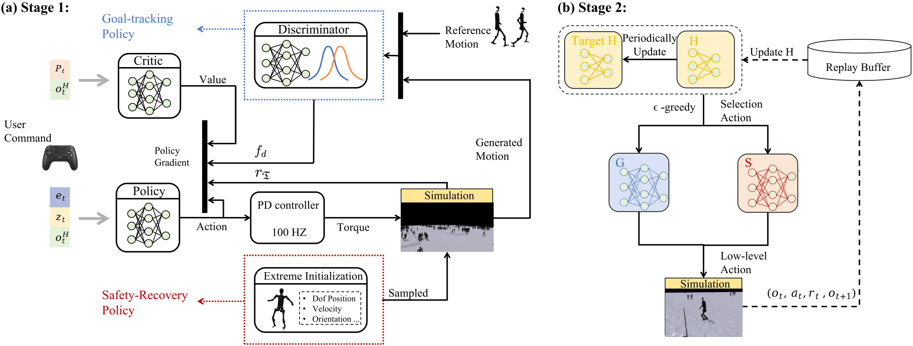

Abstract
Humanoid robots, capable of assuming human roles in various workplaces, have become essential to the advancement of embodied intelligence. However, as robots with complex physical structures, learning a control model that can operate robustly across diverse environments remains inherently challenging, particularly under the discrepancies between training and deployment environments. In this study, we propose HWC-Loco, a robust whole-body control algorithm tailored for humanoid locomotion tasks. By reformulating policy learning as a robust optimization problem, HWC-Loco explicitly learns to recover from safety-critical scenarios. While prioritizing safety guarantees, overly conservative behavior can compromise the robot's ability to complete the given tasks. To tackle this challenge, HWC-Loco leverages a hierarchical policy for robust control. This policy can dynamically resolve the trade-off between goal-tracking and safety recovery, guided by human behavior norms and dynamic constraints. To evaluate the performance of HWC-Loco, we conduct extensive comparisons against state-of-the-art humanoid control models, demonstrating HWC-Loco's superior performance across diverse terrains, robot structures, and locomotion tasks under both simulated and real-world environments.
Research Method
Overview of HWC-Loco: The framework consists of two stages: (a) Training goal-tracking policy to effectively enable human-like locomotion across diverse terrains and safety recovery policy to recover from safety-ciritical states (i.e., extreme-case). (b) Training the high-level planning policy to select between the two pre-trained low-level policies, thereby ensuring locomotion stability and consistency.
Experiment
Human-like Locomotion
Continuous Stairs
Omni-directional Control
Omni-directional Disturbance
Recovery from Extreme-case
Soft and Slippy Terrain
25-degree of Slope
15cm Stairs
Malicious Commands
Discrete Terrain
Malicious Commands
Discrete Terrain
Up Slope
Down Slope
Uneven Slope
Uneven Slope
Walking Forward
Conclusion
Summarize the main conclusions of the research, as well as the contributions of this research to the field and future research directions.